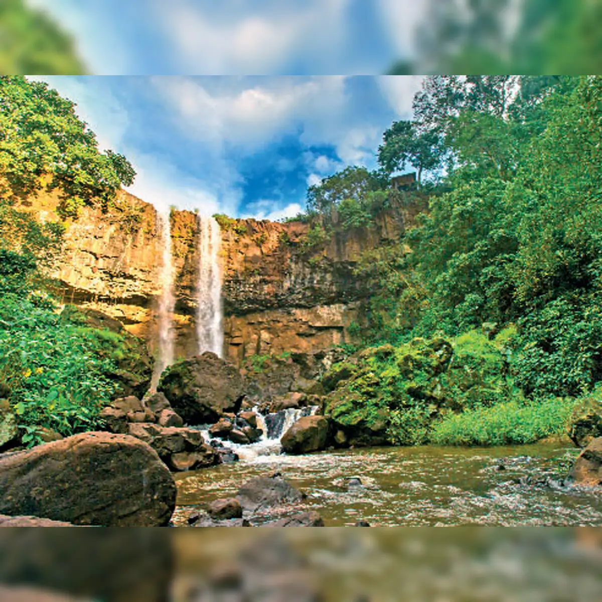
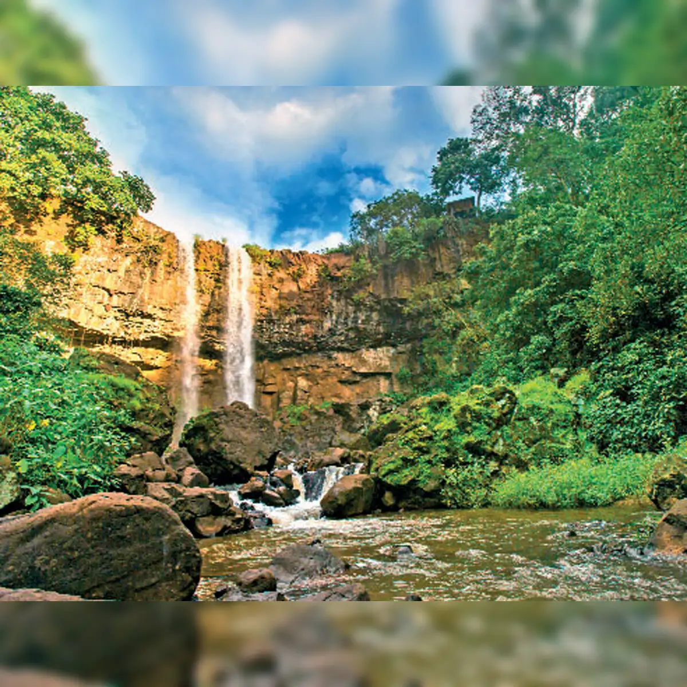

Top Attractions in Amarkantak
अमरकंटक के प्रमुख आकर्षण
Narmada Udgam
नर्मदा उद्गम स्थल
The sacred origin point of the Narmada River, surrounded by temples and serenity. Three rivers - the holy Narmada, the Sone and the Johila emerge from the womb of Amarkantak. A rising stream of Narmada can be seen at The Narmada Udgam Temple which is the most visited place in Amarkantak. Every year on the occasion of Narmada Jayanti, devotees in abundance gather here to attend the special event. Narmada Udgam Temple is surrounded by wonderful natural wonders like Narmada kund, Sonemuda (the source of river Sone), plunging Dugdhara falls and the Kapildhara falls.
Kapildhara Waterfall
कपिलधारा झरना
A picturesque waterfall formed by Narmada, 100 feet tall. It is associated with the legends of Saint Kapil or Kapila. It is said that he spent 12 years in meditation at this place. The holy Narmada pours downhill as a gigantic waterfall forms the Kapil Dhara waterfall. On the rocky banks of the brisk, the blue water is the holy Narmada and is a popular picnic spot for visitors. This waterfall is the most famous among all the Amarkantak Waterfalls due to its association with the Hindu saint.
Sonemuda
सोनेमुड़ा
Origin of the Son River with natural beauty and tranquility.

Dugdh Dhara
दुग्धधारा
A scenic waterfall near Kapildhara, resembling the flow of milk.People take a one-kilometre trek from the Kapil Dhara to the next Narmada fall which is Dugdh Dhara. This trek is quite a popular thing to do in Amarkantak among the tourists. It is surrounded by rocky steps with wild bushes. The froth of water looks like a stream of Dugdh (Milk), naming it the Dugdh Dhara waterfall.
Yantra Mandir
यंत्र मंदिर
A unique temple showcasing sacred geometries and spiritual energy points. The most noticeable feature of the Shri Yantra Mandir is the massive sculpture with four heads at the entrance path. The head represents the face of goddess Laxmi, Saraswati, Kali, and Bhuvaneshwari. They are accompanied by statues of Lord Ganesha and Kartik, as well as 64 exquisitely carved deities also known as Chaunsath Yoginis. The temple is constructed as a 3D projection of the Sri Yantra or Sri Chakra, which forms the core of the Sri Vidya worship in Hinduism.

 
